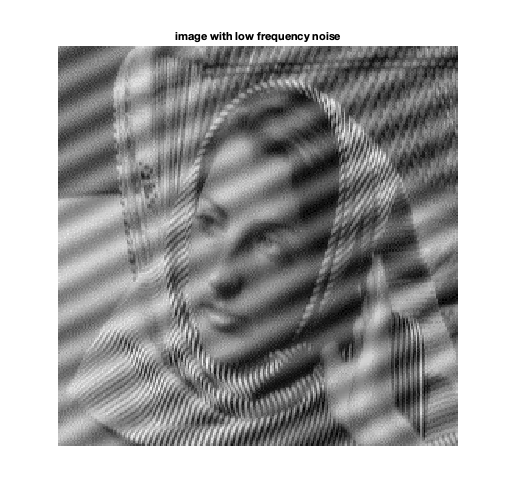
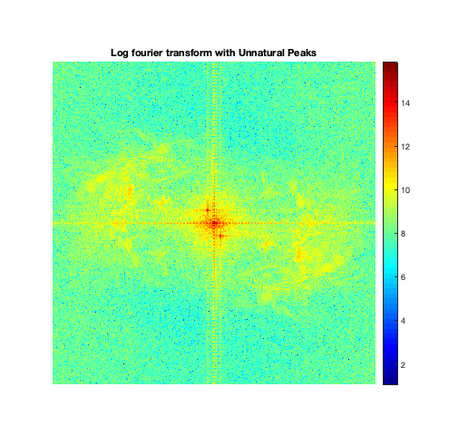
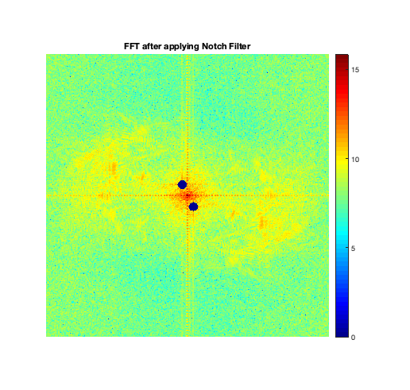
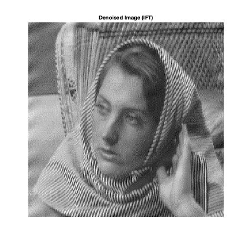

Contents
MyMainScript
clc; clear all; close all; warning('off', 'all'); tic;
CS 663: Digital Image Processing, IIT Bombay (Autumn 2020)
Aman Kansal, Ansh Khurana, Kushagra Juneja
Assignment 5
Q3: Notch Filter to remove interference
Implementation of the necessary functionalities can be found in the
img = load('../data/image_low_frequency_noise.mat'); img = im2double(img.Z); figure(1); imshow(img, [min(img(:)) max(img(:))]); truesize(figure(1),[400 400]) title('image with low frequency noise'); hold off; shape = size(img);
Computation of DFT
FA = fftshift(fft2(img, 2*shape(1), 2*shape(2))); lFA = log(abs(FA)+1); figure(2); imshow(lFA,[min(lFA(:)) max(lFA(:))]); % hold on; % draw_circle(Peak1, r); % draw_circle(Peak2, r); truesize(figure(2),[400 400]) colormap('jet'); colorbar; title('Log fourier transform with Unnatural Peaks'); hold off;
Detected peaks using pixel info and verified it by observing values in the matrix.
Peak1 = [247, 237]; Peak2 = [267, 277];
Ideal Notch Filter
R=8; [X, Y] = meshgrid(1:2*shape(1), 1:2*shape(2)); mask1 = (X - Peak1(1)).^2 ... + (Y - Peak1(2)).^2 <= R.^2; mask2 = (X - Peak2(1)).^2 ... + (Y - Peak2(2)).^2 <= R.^2; mask = (1-double(mask1)-double(mask2));
Application of Notch Filter
figure(3); maskedFA = FA .* mask; maskedlFA = log(abs(maskedFA)+1); % imshow(); imshow(maskedlFA, [min(maskedlFA(:)) max(maskedlFA(:))]); hold on; truesize(figure(3),[400 400]) colormap('jet'); colorbar; title('FFT after applying Notch Filter'); colorbar; hold off;
IDFT of Notched FT
denoised_img = ifft2(ifftshift(maskedFA)); denoised_img = denoised_img(1:256, 1:256); figure(4); imshow(denoised_img, [min(denoised_img(:)) max(denoised_img(:))]); truesize(figure(4),[400 400]) title('Denoised Image (IFT)'); hold off; toc;
Elapsed time is 3.181741 seconds.